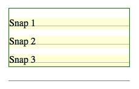
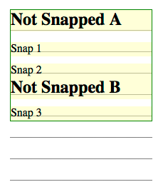
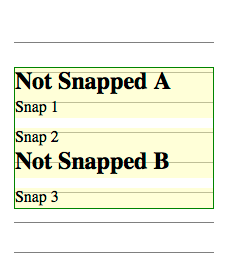
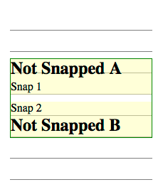
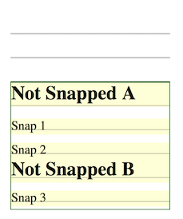

This module contains CSS features for aligning
content to a baseline grid. CSS is a language for describing the
rendering of structured documents (such as HTML and XML) on screen, on
paper, in speech, etc.
Status of this document
This is a public copy of the editors' draft. It is provided for
discussion only and may change at any moment. Its publication here does
not imply endorsement of its contents by W3C. Don't cite this document
other than as work in progress.
The (archived) public
mailing list
www-style@w3.org (see instructions) is preferred for
discussion of this specification. When sending e-mail, please put the text
“css-line-grid-1” in the subject, preferably like this:
“[css-line-grid-1] …summary of comment…”
This specification provides features to align lines and blocks to
invisible grids in the document.
Aligning lines and blocks to grids provides the following benefits:
Vertical rhythm is kept for better readability.
Lines are aligned between columns in multi-column documents.
The top and the bottom margins of pictures are made equal, while
keeping the vertical rhythm of text before and after the pictures.
Layout lines are at the same position on every page in paged media.
Keeping the position of the bottom line of a page has benefits for design
and readability. This also improves the readability of duplex printing,
two pages spreads, and displaying on slow display devices like e-ink.
East Asian layouts require vertical rhythm more often than other
scripts do, even in single column, non-paged media documents, as defined
in [JLREQ].
There are several types of objects in a document that can break the
vertical rhythm. Examples include lines with different sizes of text,
pictures, and tables.
Vertical rhythm kept through pictures and different size
of text in a multi-column document.
Large text wraps within line grids.
When a different size of text, such as a headings, wraps, it is usually
aligned to grids as a block and the lines within the block do not align.
Sidenotes (and footnotes for that matter) are
often set at a smaller size than the basic text. This smaller text
should still line up with the basic text. Authors can achieve this
effect by calculating appropriate font-size, line-height, and margins*.
Only if author controls everything. It can
easily be broken by user stylesheet, for instance.
Sidenotes are set at a smaller size, but still line up
with the basic text.
East Asian layouts may require width be a multiple of
em without fractions.
East Asian layouts may require grid-like features in inline progression
direction as well.
It is often desirable in East Asian layouts to make the line width a
multiple of em without fractions. Because most East Asian
characters have 1em advance and most East Asian documents are justified,
this minimizes cases where justification needs to expand character
spacing.
This module provides the following capabilities:
Defining grids in the line progression direction.
Controling how lines and blocks align to the grids.
It is important to control these capabilities independently, so that,
for example, aligning to grids can be turned off for tables, but can then
be turned back on for aligning the following text to the grids.
1.2. Module Interactions
This module extends the line box model defined in [CSS21] sections 9.4.2 and 10.8.
1.3. Values
This specification follows the CSS property
definition conventions from [CSS21]. Value types not defined in
this specification are defined in CSS Level 2 Revision 1 [CSS21]. Other CSS
modules may expand the definitions of these value types: for example [CSS3COLOR],
when combined with this module, expands the definition of the
<color> value type as used in this specification.
In addition to the property-specific values listed in their definitions,
all properties defined in this specification also accept the inherit
keyword as their property value. For readability it has not been repeated
explicitly.
Specifies whether this box creates a new baseline grid for its
descendants or uses the same baseline grid as its parent. (Each box always
has an associated line grid. However, whether a box or its contents snap
to a line grid is determined by ‘line-snap’ and ‘box-snap’.)
‘match-parent’
Box assumes the line grid of its parent.
‘create’
Box creates a new line grid using its own font and line layout
settings. The line grid consists of a series of horizontal lines
corresponding to all the baselines (alphabetic, text-top, text-bottom,
mathematic, central, hanging, etc.) and to the line-over and line-under
edges, positioned where they would fall if the contents of this element
consisted entirely of line boxes filled with text (no sub-elements) using
the first available font. If the box is paginated, the line grid is
restarted on each page; since line boxes cannot be fragmented, no page
begins with the bottom part of a line's grid.
The names of these values is currently up for debate.
Current suggestions for ‘match-parent’ include ‘match-parent’ and
‘normal’; those for ‘create’ include ‘create’ and ‘new’.
The original proposal for line grids allowed an element to
create a named grid. This property could still be extended to do this in
the future.
Håkon
points out that there might be a need to have line grids aligned to
the page box rather than the page content box. The current proposal has no
way to switch between the two.
There might need to be an offset for more complicated
designs. How to set this offset is problematic: usually it's not a fixed
length, but the distance to clear some header content. This could be added
to a later level of line-grid.
3. Snapping to a Grid
3.1. Snapping Line Boxes: the
‘line-snap’
property
This property applies to all the line boxes directly contained by the
element, and, when not ‘none’, causes each line box to shift (usually
downward, possibly by zero) until it snaps to the line grid specified by
‘line-grid’.
(The unshifted position is the position that would be determined by normal
line stacking rules, with consideration of any new controls defined by
other modules such as [CSS3LINE].) Shifting line boxes in
this way affects layout – it is not merely a display translation. If a
line box is shifted downward, then subsequent line boxes will be laid out
using the new shifted position as input to their line stacking rules.
Values have the following meanings:
‘none’
Line boxes do not snap to the grid; they stack normally.
‘baseline’
The dominant baseline snaps with the matching baseline on the line
grid applying to the element.
‘contain’
Two baselines are used to align the line box: the line box is snapped
so that its ‘central’ baseline (halfway
between the ‘text-over’ and ‘text-under’ baselines) is centered between one of the
line grid's ‘text-over’ baselines and a
subsequent (but not necessarily consecutive) ‘text-under’ baseline.
In some cases lines of equal line height will not align perfectly to a
baseline grid: this happens, for example, when fonts (of the same size)
with different baseline tables are mixed on a line. For this reason, if
shifting the line by the largest difference between the smallest ascent
and largest ascent of a single size used on the line would result in a
smaller shift, then the contents of the line box are shifted up within the
line box so as to allow the line to snap without jumping downward to the
next grid line.
Line boxes almost always shift downward (towards the block-end
direction) when snapping to a line grid. Here there are three lines with
20px line-height and line-snap:baseline that should snap to a 30px line
grid. Each line box shifts down so that the baselines align with the grid
lines. Before line snapping  After line snapping
In the figures below, there are two additional
lines from h3 elements with line-snap:none. These lines do not shift to
align to the grid, but their positions can change based on the shifting
of lines around them. In this example, lines 1 2 and 3 shift down to snap
their baselines to the grid lines, and line B has normal line box
placement just below the line above.
Before line snapping

After line snapping
The block containing all of these lines might not be top-aligned
within its container. In the figures below, the block containing the
elements is centered. In a centered situation, you have to align
baselines while maintaining centering.
This can be done in two shift-and-center steps. First, shift the
snapping lines as if there were no centering (as in figure 8 above), then
remove the shift for the very first snapping line and center the block.
You can see the result in the partial shifting figure below.
In the second step, measure the distance from the first snapped line's
baseline to the grid lines above and below, looking for the closest grid
line to that baseline.
If the closest grid line is in the block-start direction, then add
space below the last line in the block equal to twice that distance. Then
the block is centered again, which will align all of the snapped lines to
the grid.
 Partial shifting
Full line snapping
If the closest grid line is in the block-end
direction, then the first snapped line is shifted downward by twice that
distance. Then the block is centered again, which will again align all of
the snapped lines to the grid.
 Partial shifting
Full line snapping
An end-aligned block shifts snapped lines upward from the block-end
direction. The shifting distance between any two adjacent snapped lines
will be the same as in the other alignment cases. The main difference is
that the shifting between snapped and not-snapped lines (or the block
edge) occurs below the snapped lines.
Before snapping

After line snapping
3.2. Snapping Block Boxes: the
‘box-snap’
property
This is a rough draft of trying to solve the box-snapping
problem.
Some optional box values (margin-box, border-box) could be
added to the before and after values to allow snapping various box model
edges to the line grid.
An ‘auto’ value could be
useful - one that defaults to center, but snaps to before if it's the
first block in a fragment container, and snaps to after if it's the last
block in a fragment container.
none | before | after | center | first-baseline | last-baseline
Initial:
none
Applies to:
block-level boxes and internal table elements except table cells
Inherited:
yes
Animatable:
no
Percentages:
N/A
Media:
visual
Computed value:
specified value
Canonical order:
per
grammar
Specifies how the block is snapped to the baseline grid. Values have the
following meanings:
none
The block is not snapped to any grid.
before
The before edge is snapped to the nearest grid line.
after
The after edge is snapped to the nearest grid line.
center
The block is centered centered between one of the baseline grid's
‘text-over’ baselines and a subsequent (but
not necessarily consecutive) ‘text-under’
baseline.
first-baseline
The first line box's dominant baseline is snapped to the nearest grid
line.
last-baseline
The last line box's dominant baseline is snapped to the nearest grid
line.
When snapping to baselines on a line grid, either the text-over
or text-under baseline is chosen: whichever one is on the matching
side of the central baseline. For example, when snapping the before edge
in horizontal writing mode, the over edge is chosen. In some cases
the under edge might be used instead for the before edge: for
example, when the writing mode of the line grid doesn't match that of the
affected element, or when due to the ‘text-orientation’ settings the under side
corresponds to the after edge.
To snap a block-level element to a grid line, the effective margin is
increased at that edge.
If, however, the box is an empty block that could be collapsed through, then
this property has no effect. [CSS21]
When applied to table row group and table row boxes, ‘box-snap’ only affects
the before and after edges, and only if those edges are not at the
beginning or end of the table, respectively. To snap a before edge on a
table row or row group, the preceding row's height is increased. To snap
an after edge on a table row or row group, the affected row's height is
increased.
When applied to table column group and table column boxes, ‘box-snap’ only affects
the start and end edges, and only if those edges are not at the start or
end of the table, respectively. How the space is redistributed among
columns to satisfy snapping constraints is not defined, however:
In an auto-sized table no column may be smaller than its minimum
content width.
The resulting table must not exceed its original measure if it had a
non-‘auto’ measure.
The adjusted widths must not cause the table to overflow its
containing block any more than it would with ‘box-snap:
none’.
To satisfy these constraints, some column edges may remain unsnapped.
4. Conformance
4.1. Document Conventions
Conformance requirements are expressed with a combination of descriptive
assertions and RFC 2119 terminology. The key words “MUST”, “MUST
NOT”, “REQUIRED”, “SHALL”, “SHALL NOT”, “SHOULD”,
“SHOULD NOT”, “RECOMMENDED”, “MAY”, and “OPTIONAL” in the
normative parts of this document are to be interpreted as described in RFC
2119. However, for readability, these words do not appear in all uppercase
letters in this specification.
All of the text of this specification is normative except sections
explicitly marked as non-normative, examples, and notes. [RFC2119]
Examples in this specification are introduced with the words “for
example” or are set apart from the normative text with
class="example", like this:
This is an example of an informative example.
Informative notes begin with the word “Note” and are set apart from
the normative text with class="note", like this:
Note, this is an informative note.
4.2. Conformance
Classes
Conformance to CSS Line Grid Level 1 is defined for three conformance
classes:
A style sheet is conformant to CSS Line Grid Level 1 if all of its
declarations that use properties defined in this module have values that
are valid according to the generic CSS grammar and the individual grammars
of each property as given in this module.
A renderer is conformant to CSS Line Grid Level 1 if, in addition to
interpreting the style sheet as defined by the appropriate specifications,
it supports all the properties defined by CSS Line Grid Level 1 by parsing
them correctly and rendering the document accordingly. However, the
inability of a UA to correctly render a document due to limitations of the
device does not make the UA non-conformant. (For example, a UA is not
required to render color on a monochrome monitor.)
An authoring tool is conformant to CSS Line Grid Level 1 if it writes
syntactically correct style sheets, according to the generic CSS grammar
and the individual grammars of each property in this module.
4.3. Partial Implementations
So that authors can exploit the forward-compatible parsing rules to
assign fallback values, CSS renderers must treat as
invalid (and ignore as
appropriate) any at-rules, properties, property values, keywords, and
other syntactic constructs for which they have no usable level of support.
In particular, user agents must not selectively ignore
unsupported component values and honor supported values in a single
multi-value property declaration: if any value is considered invalid (as
unsupported values must be), CSS requires that the entire declaration be
ignored.
4.4. Experimental
Implementations
To avoid clashes with future CSS features, the CSS specifications
reserve a prefixed
syntax for proprietary property and value extensions to CSS. The CSS
Working Group recommends that experimental implementations of features in
CSS Working Drafts also use vendor-prefixed property or value names. This
avoids any incompatibilities with future changes in the draft. Once a
specification reaches the Candidate Recommendation stage, implementors
should implement the non-prefixed syntax for any feature they consider to
be correctly implemented according to spec.
4.5. CR Exit Criteria
For this specification to be advanced to Proposed Recommendation, there
must be at least two independent, interoperable implementations of each
feature. Each feature may be implemented by a different set of products,
there is no requirement that all features be implemented by a single
product. For the purposes of this criterion, we define the following
terms:
independent
each implementation must be developed by a different party and cannot
share, reuse, or derive from code used by another qualifying
implementation. Sections of code that have no bearing on the
implementation of this specification are exempt from this requirement.
interoperable
passing the respective test case(s) in the official CSS test suite,
or, if the implementation is not a Web browser, an equivalent test. Every
relevant test in the test suite should have an equivalent test created if
such a user agent (UA) is to be used to claim interoperability. In
addition if such a UA is to be used to claim interoperability, then there
must one or more additional UAs which can also pass those equivalent
tests in the same way for the purpose of interoperability. The equivalent
tests must be made publicly available for the purposes of peer review.
implementation
a user agent which:
implements the specification.
is available to the general public. The implementation may be a
shipping product or other publicly available version (i.e., beta
version, preview release, or “nightly build”). Non-shipping product
releases must have implemented the feature(s) for a period of at least
one month in order to demonstrate stability.
is not experimental (i.e., a version specifically designed to pass
the test suite and is not intended for normal usage going forward).
The specification will remain Candidate Recommendation for at least six
months.
Acknowledgments
This module was made possible by the advice and contributions of …